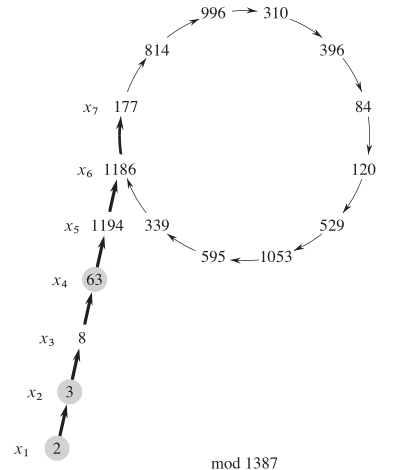

要开学了 qaq，看起来不能再鸽下去了，来水一篇。
考虑到自己 too naive，感觉之前不是很会 Pollard Rho，就只好重新拿起算导看了一遍。看完发现自己果然菜。
首先是一个叫生日悖论的东西。这玩意儿好像每一篇将 Pollard Rho 的文章都会有所提及。假设一年有 天，期望有多少个人才能使有两个人生日相同。
答案当然是 的了，其实说实在的，初看还是挺反直觉的，但仔细推一下就发现确实是这样。因为假设有 个人，就有 对比较关系嘛，而我们可以近似的认为每对关系是独立的，即相等的概率是 ，也就是期望相等的个数约为 ，要使其大于等于 ，可以解得 是 的。
然后就是 rho 算法了，他解决的是一个质因子分解的问题。
一个 naive 的想法，就是就与一个数 ，先判断他是不是质数，如果是的话，其分解就是自己了，否则每次随机一个数 ，看看是不是 的质因子，如果是的话，就递归 和 。然而这个复杂度显然是不对的。
而根据生日悖论，我们有会有一个想法，那就是多随机几个数，两两作差，每个都与 取一下 gcd 来看一看是不是等于 ，但这样的复杂度显然和前面的算法一样。
我们考虑构造函数 ， 是事先选择的一个数。首先我们需要知道一点的是，在本文中，我们认为 是在 下的一个随机函数，而事实可能并不是这样。
我们考虑构造一个序列 ， 是一个预先给出的随机数，，不难发现，这个 序列是一个 字形：

然后我们考虑，加入 是 的一个约数，对于一个长度 ，对于任意的 ，我们发现：
那么也就是说，如果我们试了 ，那就不需要试 ，因为如果 不是 的倍数，那 肯定也不是 的倍数。